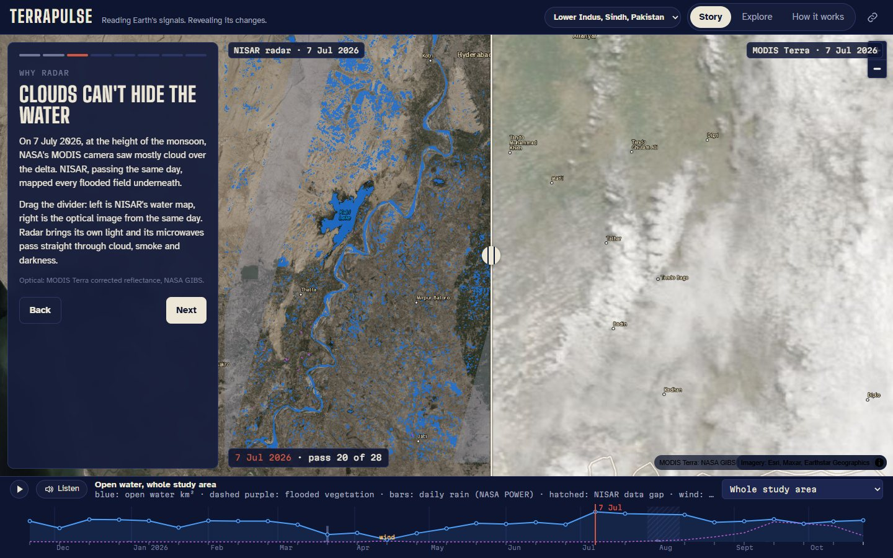
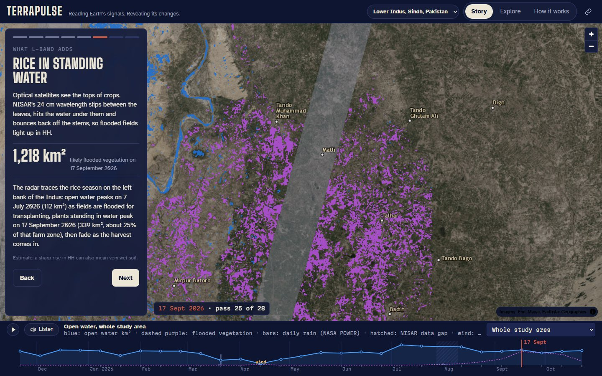
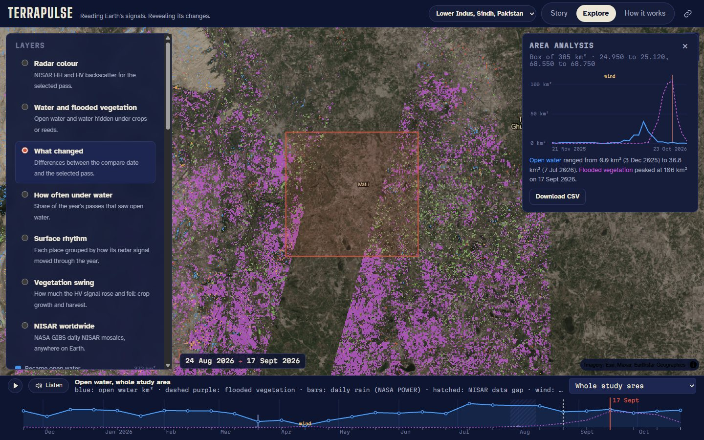
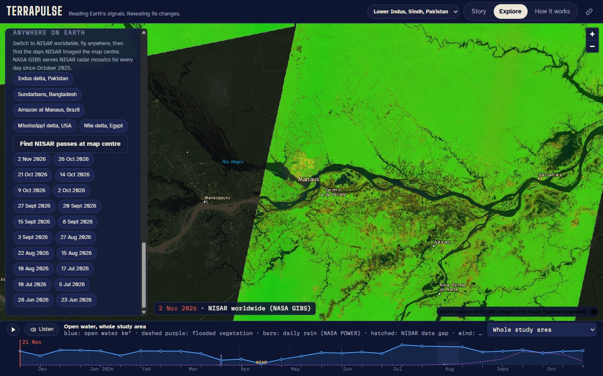

NASA Space Apps Challenge 2026 · Dancing with the SARs
Terra
Pulse
Reading Earth's signals. Revealing its changes.
A web app that turns NISAR L-band radar into a living map of floods, wetlands and harvests, from the lower Indus in Pakistan to the Amazon, and anywhere NISAR flies.
Team TERRAPULSE · Sudais Khalid · Sunnia Aslam · Topi, Pakistan
The problem
The monsoon hides what matters
- Floods, wetlands and rice fields in Sindh change week by week, exactly when monsoon clouds blind optical satellites.
- On 7 July 2026 NASA MODIS saw mostly cloud over the delta. NISAR, the same day, mapped every flooded field.
- Radar data is powerful but hard to read: HDF5 files of 6 GB each, decibels, polarisations.
- Disaster managers, farmers and teachers need a map and a number, not a file.

TerraPulse2 / 7
NASA data
A year of radar, read in minutes
28
NISAR GCOV passes over the lower Indus, Nov 2025 to Oct 2026, one processing version10
NISAR passes over the Amazon at Manaus, Jun to Nov 2026~35 s
per 6 GB file: we stream only the study area's compressed chunksASF DAAC archive→parallel HDF5 chunk streaming→NISAR validity mask→100 m grid→calibrated water, flooded vegetation, rhythm→web app
- NISAR L2 GCOV (NASA/JPL and ISRO, ASF DAAC): HH and HV backscatter, terrain corrected.
- GPM IMERG daily rainfall · NASA GIBS NISAR worldwide mosaics · MODIS and HLS optical for comparison · ASF Search API to find passes anywhere.
TerraPulse3 / 7
The science
Calibrated, checked, honest
- Open water: HH and HV thresholds chosen per radar mode to best separate a permanent lake (Keenjhar) from dry desert (Jhimpir). A field that turns 3 dB darker than its own normal counts as newly flooded.
- Flooded vegetation: L-band passes through the canopy and double-bounces off stems standing in water, so HH jumps.
- Wind check: when the reference lake stops looking like water, the pass is flagged, not misread as drought.
- Surface rhythm: k-means on each pixel's yearly signal, named by physical rules.
88 to 104
km² Keenjhar Lake on 24 of 28 passes (median 92)14.5 to 18.4
km² Haleji Lake, an independent check, not used to calibrate~1 dB
brighter dark targets in the 40 MHz mode, corrected per mode12 to 17%
of desert pixels pass the water test: a stated limitTerraPulse4 / 7
What the radar saw
The rice waltz of Sindh
- 7 July: left-bank fields flood for rice transplanting, open water jumps by 87 km² in 24 days.
- 17 September: rice standing in water peaks at 1,218 km² across the area, +217 km² on the left bank in 24 days.
- October: the purple fades as the harvest comes in.
- After the early August monsoon rain, the Badin coastal lagoons gained about 62 km² of open water.
- 14 April: wind roughened Keenjhar Lake; flagged, not mistaken for drying.

TerraPulse5 / 7
The app
Watch the land dance
- Story: chapters whose numbers are computed live from the data.
- Pulse strip: open water, flooded vegetation and rainfall for every pass. Press play, or listen: the year becomes music.
- Compare two passes, or radar against the optical image of the same day.
- Measure any area, click any pixel for its history, download CSV.
- Anywhere on Earth: NISAR mosaics and pass dates for any point.

TerraPulse6 / 7
Impact
From one delta to every river
- Disaster managers (PDMA Sindh): where water stood after a storm, even under cloud.
- Irrigation and agriculture: when rice was flooded, grown and harvested, field by field.
- Wetland managers: Ramsar lakes and lagoons, pass by pass.
- Teachers and the public: radar explained in plain words and sound.
- Scales: a new site is a few lines of config and one Colab run. Open source, Apache 2.0.
Live app: TerraPulse · code and notebook in the project repository

TerraPulse · Team TERRAPULSE7 / 7